Module: Definitions
Todo
Describe properties
Todo
Give references
definitions.py
- libnest.definitions.kf2rho(kF)
Returns rho based on wavevector kF.
It uses the relation for a uniform Fermi system and yields:
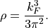
If we have a two-component mixture of protons and neutrons, both having two spin components (up and down), then
 states
for the density of one isospin, and one spin component only.
states
for the density of one isospin, and one spin component only.- Parameters
kF (float) – density
for a single component- Returns
wavevector
 [fm -1]
[fm -1]- Return type
float
See also
- libnest.definitions.rho2kf(rho)
Returns wavevector kF based on density rho.
It uses the relation for a uniform Fermi system and yields:
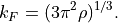
If we have a two-component mixture of protons and neutrons, both having two spin components (up and down), then
states
for the density of one isospin, and one spin component only.- Parameters
rho (float) – density
for a single component- Returns
wavevector
[fm -1]- Return type
float
See also
- libnest.definitions.rho2tau(rho)
Returns kinetic density
 for uniform Fermi system of density
.
for uniform Fermi system of density
.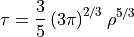
- Parameters
rho (float) – density
[fm -3] for a single component- Returns
kinetic density
[fm -3]- Return type
float
- libnest.definitions.rhoEta(rho_n, rho_p)
Returns total density
and difference  of
densities from neutron and proton densities.
of
densities from neutron and proton densities.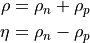
Todo
Check if I should return rho_n-rho_p OR rho_n-rho_p/(rho_n+rho_p + DENSEPSILON) #for now rho_n-rho_p because of the function: neutron_ref_pairing_field(rho_n, rho_p)
- Parameters
rho_n (float) – neutron density
 [fm -3]; sum of both spin components
[fm -3]; sum of both spin componentsrho_p (float) – proton density
 [fm -3]; sum of both spin components
[fm -3]; sum of both spin components
- Returns
pair of total density
[fm -3], and density difference
[fm -3]- Return type
float
- libnest.definitions.superfluidFraction(j, rho, vsf)
Returns superfluid fraction: how much of the matter is superfluid.
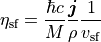
- Parameters
rho (float) – density
[fm -3]j (float) – a three-component current vector
 [fm -4]
[fm -4]vsf (float) –
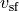
[c]
- Returns
superfluid fraction: a number between 0 and 1 [1]
- Return type
float
- libnest.definitions.vLandau(delta, kF)
Returns Landau velocity.
Landau velocity shows at which velocity the superfluid medium starts to be excited.

- Parameters
delta (float) –
 [MeV]
[MeV]kF (float) –
[MeV]
- Returns
Landau velocity
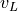
in units of speed of light [c]- Return type
float
- libnest.definitions.v_NV(B, j, rho, A)
Returns the velocity (mass velocity). It is adjusted to the entrainment effects (definition by Nicolas Chamel Valentin Allard).

- Parameters
B (float) – mean field potential coming from kinetic energy variation B [MeV fm 2]
j (float) – a three-component current vector
[fm -4]rho (float) – density
[fm -3]A (float) – mean field potential coming from current variation A [MeV fm]
- Returns
mass velocity
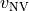
in units of percentage of speed of light [c]- Return type
float
- libnest.definitions.vcritical(delta, kF)
Returns critical velocity for superfluid.
At this velocity the system is no longer superfluid.

- Parameters
delta (float) –
[MeV]kF (float) –
[MeV]
- Returns
Landau velocity
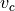
in units of speed of light [c]- Return type
float
- libnest.definitions.vsf(r)
Calculates the velocity based on gradient of the pairing field gradient.

- Parameters
r (float) – distance from the center of a vortex in femtometers [fm]
- Returns
velocity in units of percentage of speed of light [c]
- Return type
float
- libnest.definitions.vsf_NV(B, vsf, A)
Returns the velocity based on the gradient of the pairing field phase. However it is adjusted to the entrainment effects (definition by Nicolas Chamel Valentin Allard).

- Parameters
B (float) – mean field potential coming from kinetic energy variation B [MeV fm 2]
vsf (float) – [c]
A (float) – mean field potential coming from current variation A [MeV fm]
- Returns
velocity
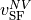
in units of percentage of speed of light [c]- Return type
float
- libnest.definitions.xiBCS(kF, delta=None)
Calculates the coherence length from BCS theory. If no delta argument is provided, it is assumed that we consider pure neutron matter.
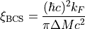
- Parameters
k_F (float) – Fermi momentum [fm -1]
delta (float) – pairing field [MeV]
- Returns
coherence length [fm]
- Return type
float